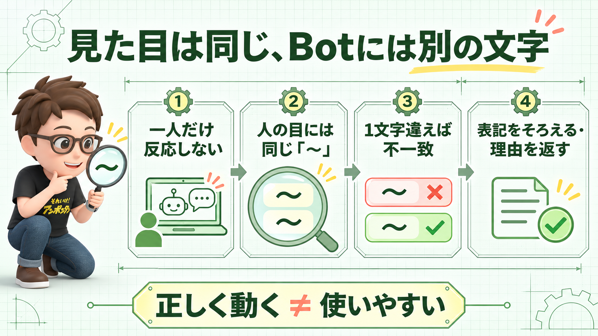

THOUGHT DEBUG / 2026.11.04
Botは動いていた。見えない1文字を除いて
「壊れていないのに動かない」。そんな不具合ほど、こちらの頭も止まりやすい。
朝の合言葉のBotが、あるメンバーにだけ反応しなかった。他のメンバーには普通に返事をしているのに、なぜだろう。
一人だけ、返事がない
朝の合言葉を受け取るBotを作った。ところが、あるメンバーにだけ反応しない。他の人は使えているので、仕組み全体が止まったわけでもなさそうだ。
「この人だけ」という現象が、原因を見えにくくしていた。
AIと一緒に処理を上から順に追い、どこで判定が分かれるかを確かめた。
最後の「〜」に隠れていた差
引っかかっていたのは、その日の合言葉の末尾にある「〜」。パソコンとiPhoneで入力されたその記号は、画面上では同じに見えても、内部では異なる文字として扱われていた。
同じ合言葉に見える。
1文字違うので一致しない。
Botは止まっていなかった。設定どおり、違う文字を弾いていた。
ただし、PCとiPhoneなら必ず別の文字になる、という話ではない。今回の入力方法の組み合わせで、見えない差が生まれていたということだ。
思考のデバッガーからの突っ込み
「ちゃんと動いていた」で終わりにしていいのだろうか。Botから見れば正解でも、人が同じ合言葉を入れたつもりで返事がないなら、使い勝手のほうは少し壊れている。
厳密さは頼もしい。でも今回は、記号ひとつに融通の利かない門番だったらしい。判定前に表記をそろえる、許容する記号を決める、あるいは不一致の理由を返す。次に直す場所は見えてきた。
次に同じことが起きたら
特定の人だけに起きる不具合なら、まずその人の端末、入力方法、送った文字列を比べてみる。「一人だけ」は例外ではなく、原因の手がかりかもしれない。
一段深掘りする問い
このBotに本当に守ってほしいのは、文字の完全一致だろうか。それとも、相手が合言葉を伝えようとした意図だろうか？
図解

他者紹介用メモ
同じ合言葉に見えるのに、Botがある人にだけ返事をしない。原因は末尾の「〜」に潜む、見た目ではわからない文字の違いでした。仕組みは仕様どおり動いていても、使う人には「壊れた」と映る。そのズレから、特定の人だけに起きる不具合の探し方と、機械の正しさを人の使いやすさにつなぐ問いを考えます。